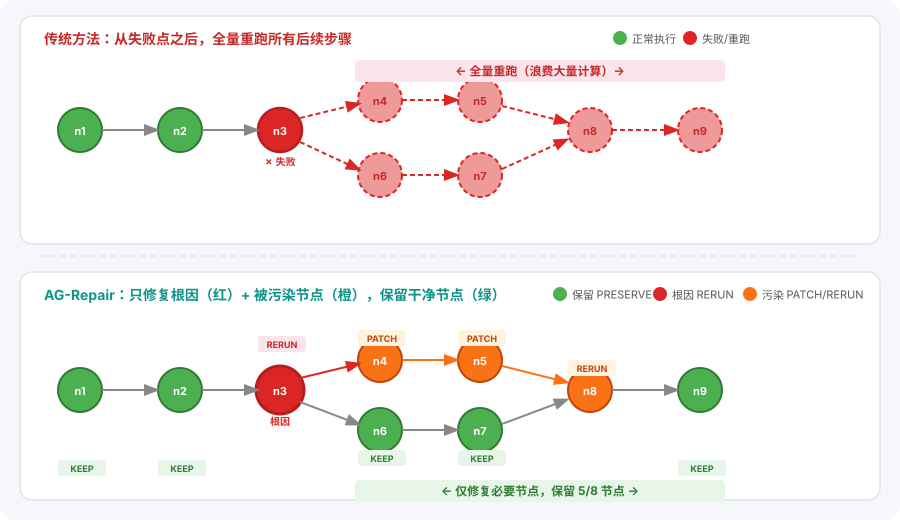
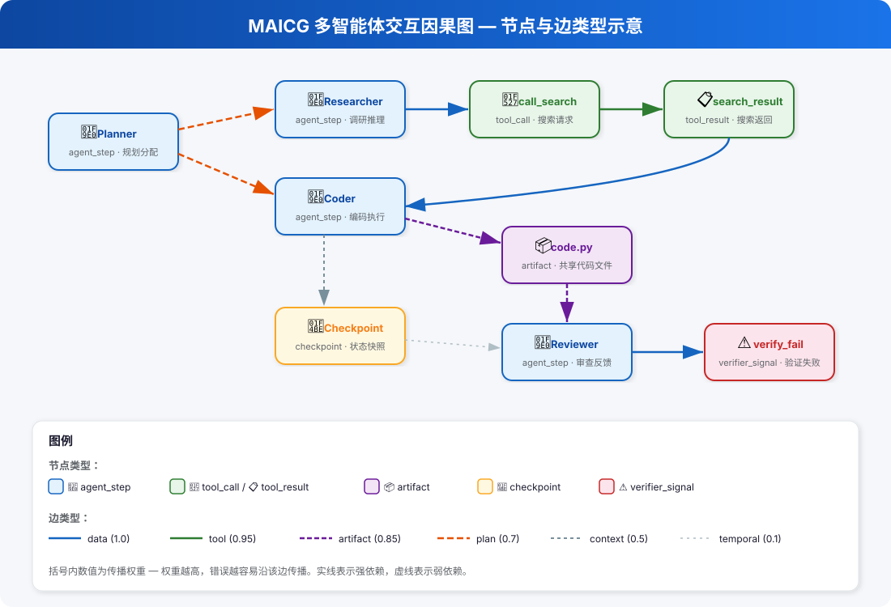
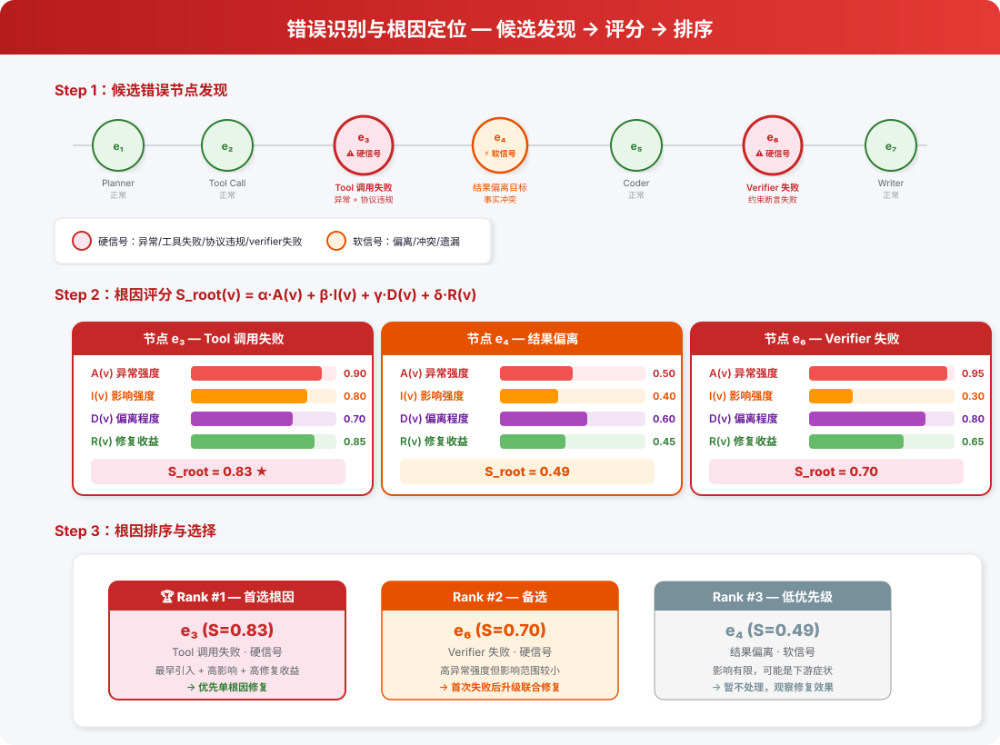
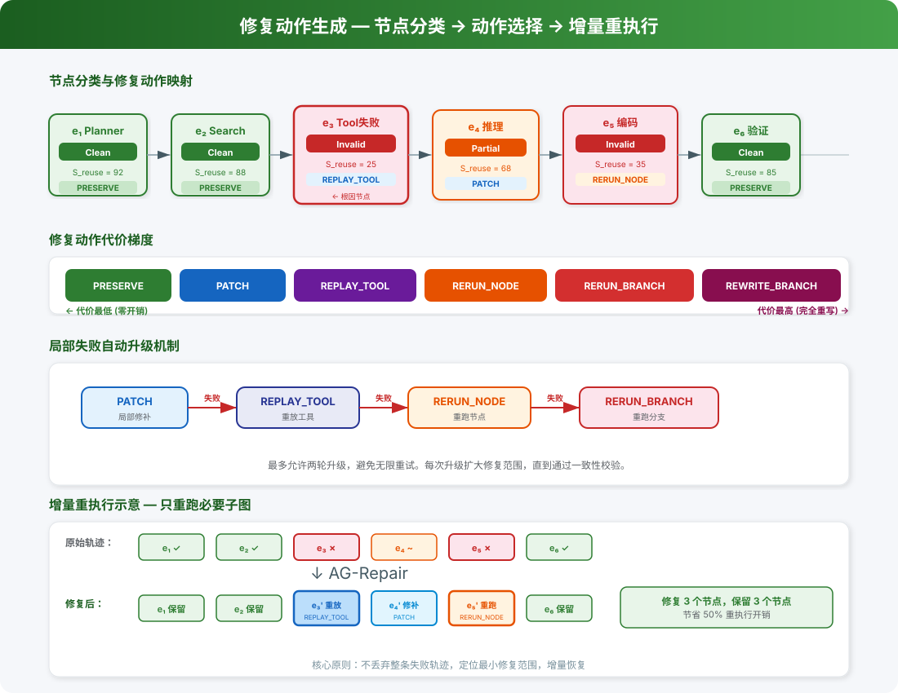

核心思想：不丢弃整条失败轨迹，而是定位最小修复范围，增量恢复

发现错误后，从错误点开始全量重跑所有后续步骤
将失败轨迹视为可分析、可切分、可局部修补的结构化过程
每个事件 eᵢ 是一次可观测执行单元：agent 推理输出、工具调用、工具返回、artifact 写入、checkpoint、verifier 信号
多智能体执行过程不是单纯的线性链，而是具有复杂依赖关系的交互系统。一个节点是否受错误影响，不能只看它是否出现在错误点之后，还必须看它是否真正使用了错误信息。
| 边类型 | 含义 | 示例 | 传播权重 |
|---|---|---|---|
| data | 显式数据依赖 | 某步直接读取前一步输出 | 1.0 |
| tool | 工具调用 ↔ 工具结果 | call_search → search_result | 0.95 |
| artifact | 共享 artifact 读写依赖 | writer 写入 → reader 读取同一文件 | 0.85 |
| plan | 规划 → 子任务执行 | planner 分配任务 → executor 执行 | 0.7 |
| context | 同 agent 跨轮上下文延续 | agent 第3轮 → 第4轮对话 | 0.5 |
| temporal | 纯时序相邻（弱依赖） | 仅表示顺序，不代表语义依赖 | 0.1 |
关键区分：将"真实信息传播"和"只是时间上发生在后面"分开，这是精确边界识别的基础。

| context | 同一 agent 连续输出 |
| tool | 工具调用 ↔ 工具结果 |
| data | 显式声明 depends_on 的事件 |
| artifact | 读写共享对象的事件 |
| temporal | 相邻步骤（弱依赖） |
Checkpoint 自动捕获时机：规划器输出后、工具调用前后、artifact 写入后、verifier 失败后、分支结束时
不是回答"哪一步有错误"，而是回答：
哪一个节点最早引入了对后续任务失败真正有决定性影响的偏差，并且最值得被修复。
定位的不是"最显眼的错误点"，而是"修复价值最高的根因点"。
硬信号（优先）
软信号（补充）
所有信号统一记录在节点的 signals 字段中
| 分量 | 含义 | 说明 |
|---|---|---|
| A(v) | 异常强度 | 该节点上观测到的错误证据强弱 |
| I(v) | 影响强度 | 从该节点向后能到达多少潜在受影响节点 |
| D(v) | 偏离程度 | 节点结果与任务目标/约束之间的偏差 |
| R(v) | 修复收益 | 修复该节点的潜在恢复价值 |
默认策略：硬信号优先 → A(v) 和 I(v) 权重更高

如果只知道"第 50 步错了"，却不知道后续哪些节点真正被污染，就无法做到最小干预。传统方法将错误点之后全部步骤判为失效，带来大量无意义重跑。AG-Repair 把错误传播范围建模为图上的可计算问题。
| P(v) | 节点 v 的污染分数 |
| Pred(v) | 所有指向 v 的前驱节点 |
| w(u,v) | 边权重（按边类型不同） |
| λ = 0.85 | 衰减系数 |
污染分数不能直接决定是否重跑 — 部分污染的节点可能仍保留大量可用结构
| Scorrect | 节点本地正确性（权重 50%） |
| 1 − P | 未污染程度（权重 30%） |
| Scompat | 与修复后上下文的兼容性（权重 20%） |
最终缩放到 0–100 范围
不让模型自由生成"应该怎么修"，而是将修复规划视为受限决策问题：先识别错误模式，再在固定动作空间中做成本感知选择。
| 错误模式 | 含义 |
|---|---|
| evidence_fabrication | 伪造证据 / 事实获取失败 |
| tool_call_error | 工具参数错误 / 调用失败 |
| context_drop | 上下文传递失败 / 信息丢失 |
| reasoning_bug | 局部逻辑推理错误 |
| plan_bug | 高层规划错误 |
| 动作 | 含义 |
|---|---|
| PRESERVE | 完全保留，不动 |
| PATCH | 原位局部修补 |
| REPLAY_TOOL | 仅重放工具调用 |
| RERUN_NODE | 仅重跑单节点 |
| RERUN_BRANCH | 重跑整个分支 |
| REWRITE_BRANCH | 重写整个分支 |
| 节点状态 | 默认动作 | 决策依据 |
|---|---|---|
| Clean 节点 | PRESERVE | 复用评分 ≥ 80，无需干预 |
| Partial 节点 | PATCH | 局部修补即可恢复 |
| Invalid 工具节点 | REPLAY_TOOL | 仅工具调用出错，重放即可 |
| Invalid 普通节点 | RERUN_NODE | 节点逻辑错误，需重新执行 |
| 规划错误 | RERUN_BRANCH | 高层规划偏差，影响整个分支 |
| 分支级严重污染 | REWRITE_BRANCH | Invalid > 40%，局部修补不经济 |
关键不是"重新运行模型"，而是"只重新运行必要部分，同时让保留部分继续有效"。
从最靠近根因节点、且位于其之前的 checkpoint 恢复
不将整条原始轨迹作为上下文，只注入依赖前沿：
显著减少长上下文干扰，降低随机性
| 动作 | 执行方式 | 影响范围 |
|---|---|---|
| PRESERVE | 完全保留，不重新执行 | 零开销 |
| PATCH | 对原节点内容局部更新（替换错误参数、修补结论、注入缺失字段） | 单节点内部 |
| REPLAY_TOOL | 仅重新执行该工具调用，其他节点继续复用 | 单工具调用 |
| RERUN_NODE | 重新运行当前节点，使用修复后的依赖前沿作为输入 | 单节点 |
| RERUN_BRANCH | 对整个子分支重新运行，保留其它分支与公共节点 | 单分支 |
| REWRITE_BRANCH | 对整段分支重新生成（局部修补已不经济时） | 单分支（完全重写） |
最多允许两轮升级，避免陷入无限重试

局部一致性失败 → 当前动作粒度过小 → 升级修复动作
即使未完全成功，只要显著缩小失败范围或推动关键里程碑，也视为有效改进
把错误传播范围从经验判断变成图上的量化问题 — 通过 MAICG 上的污染传播模型 + 复用评分，精确区分 Clean / Partial / Invalid
把开放式"怎么修"变成受限动作空间中的成本感知决策 — 六种动作按代价梯度排列，层层升级，可解释可审计
把"从错误点之后全部重来"变成"从最近安全状态出发，仅重放必要子图" — 依赖 checkpoint + journal replay + Active Dependency Frontier
AG-Repair 不只是一个 failure attribution 框架
而是一套真正面向 failure recovery 的完整方法论